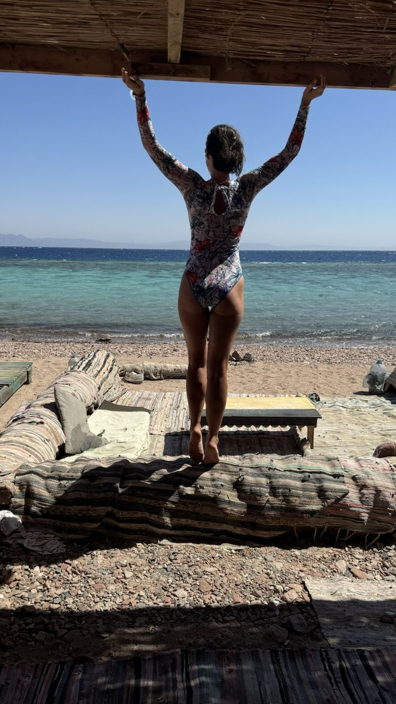

Приезд и заселение
Встреча в Шарм-Эль-Шейхе, трансфер в Дахаб, заселение, знакомство группы и мягкая вечерняя практика.
Египет, Дахаб
11 — 21 ноября 2026
Одиннадцать дней йоги, медитаций, фридайвинга и горного Синая с Ильёй Бариновым — пустыня за спиной, бирюза моря в пяти минутах ходьбы.
Зачем сюда ехать
Дахаб — один из немногих уголков планеты, где тёплое бирюзовое море в пяти минутах ходьбы от отеля, а за спиной стоят красные горы Синая. Здесь нет шума курортов, нет суеты и спешки. Только ритм, который ты выбираешь сам.
Мы собираем маленькую группу — максимум 15 человек — чтобы было пространство для живого контакта с практикой и пейзажем. Утром йога, днём выезды или свободное море, вечером — медитации и тишина.




«В Дахабе время течёт иначе. Утром — практика, потом море, потом горы. К концу недели понимаешь, что так и должно быть.»— участница прошлого кэмпа
Как устроен день

Практика на пробуждение тела — йога для спины, суставов и баланса, короткие медитативные паузы, дыхание и мягкая суставная разминка. Без спешки, без целеполагания. Просто войти в день с ясной головой.
Практики ведёт Илья Баринов — они подходят как новичкам, так и тем, кто практикует давно.

Каньон с темаскаль-баней, заповедный Абу-Галум и Голубая лагуна, скалы Синая с горным клубом — для тех, кто хочет чуть больше адреналина. Или просто свободное море, снорклинг и шезлонг. Никто не обязан никуда ехать.

Медитативные практики на снятие напряжения, мягкая растяжка и дыхание перед сном. Нервная система отдыхает вместе с телом. Тишина вечеров Дахаба — отдельная ценность этого места.
Программа
Порядок дней подстраивается под ветер, приливы и ритм группы. Но «скелет» остаётся: йога, медитации, море, каньон, Абу-Галум, вечера без перегруза.
Встреча в Шарм-Эль-Шейхе, трансфер в Дахаб, заселение, знакомство группы и мягкая вечерняя практика.
Утренние и вечерние занятия, короткие медитативные блоки, море и прогулки по Дахабу — мягко входим в климат и ритм группы.
Выезд в каньон, прогулка по красным скалам Синая и паровая церемония темаскаль прямо в каньоне. Один из самых сильных дней кэмпа.
По желанию группы — пробное скалолазание или однодневная программа с Дахабским горным клубом. Детали и стоимость согласуем заранее.
Поездка к заповедному побережью, бирюзовая вода, спокойный день для купания и созерцания.
Финальная практика, сборы, трансфер в аэропорт Шарм-Эль-Шейха.
Дахаб — одно из немногих мест, где можно одновременно нырнуть в 30-метровую глубину и дойти до 2000-метровой вершины. Мы едем туда, чтобы напомнить телу и голове, что они умеют всё.
— Илья Баринов
Условия
10 ночей в El Salam Hotel в Дахабе. Завтраки включены.
Групповой трансфер из аэропорта Шарм-Эль-Шейха в Дахаб и обратно.
Утренние и вечерние занятия с Ильёй Бариновым: йога, дыхание и медитативные блоки на протяжении путешествия.
Поездка в каньон и темаскаль-баня в каньоне.
Выезд к Абу-Галуму и Голубой лагуне для купания и спокойного отдыха.
Организация маршрута, помощь на месте и координация группы. Рекомендованные варианты перелёта пришлём в Telegram после бронирования.
Отель
Отель прямо у моря, в районе Dahab Beach. Завтраки, Wi-Fi, бассейн, ресторан и бар. Тихое место без курортного шума.
Финальный тип номера и детали размещения подтверждаем после формирования группы.
Посмотреть отель на Booking →Дополнительно
Для желающих — базовая программа по фридайвингу. Это отдельный блок с инструктором: безопасность, дыхание, расслабление в воде и первые погружения. Хорошо стыкуется с утренней йогой и вечерними медитациями.
Стоимость и расписание фридайвинга уточняются отдельно.

Скалы Синая
У Дахаба давняя скалолазная и альпинистская среда: тёплый камень, понятные маршруты для новичков и насыщенные программы для тех, кто уже в теме. Мы дружим с Дахабским горным клубом — это люди, которые много лет ведут группы по Синаю с заботой о безопасности и удовольствии от движения.
Если группе откликается формат «чуть-чуть адреналина по-человечески», мы вписываем в расписание пробный день на скалах. Формат и стоимость выбираем заранее.
Альпинизм и туры на скалах — сайт горного клуба →


Преподаватель
Практикует и преподаёт йогу и цигун более 15 лет. Ведёт регулярные классы и выездные интенсивы. Занимается горным туризмом и скалолазанием — Дахаб для него место, которое знает изнутри.
Стиль работы: без давления, без соревнования. Практика подстраивается под группу и состояние каждого.
Telegram @vsemaya →Стоимость
Место закрепляется после заполнения заявки и предоплаты. Остаток — до 11 октября 2026 года.
Льготная стоимость при раннем бронировании.
Осталось 3 места по раннему бронированию
Базовая стоимость участия после первых пяти мест.
Фиксирует место в группе.
Остаток — оплатите до 11 октября 2026, не позже чем за месяц до старта кэмпа.
FAQ
Нет. Практики подстраиваются под уровень группы: можно углубляться или оставаться в мягком режиме. Напишите заранее о травмах, ограничениях и том, что для вас комфортно.
Да. И фридайвинг, и выход к скалам — по желанию. Основа кэмпа — йога, медитации, море и общие выезды в каньон и Абу-Галум.
После подтверждения места мы пришлём в Telegram рекомендованные варианты перелёта и стыковок, чтобы удобно попасть в общий трансфер из Шарм-Эль-Шейха.
В стоимость входят завтраки в отеле. Обеды и ужины оплачиваются отдельно, в Дахабе много кафе рядом с морем.
Максимум 15 участников. Маленькая группа — это осознанный выбор: так больше внимания каждому и лучше атмосфера.
Заявка
Заявку удобнее оставить в Telegram @vsemaya — так мы быстрее ответим, пришлём детали по размещению, предоплате и рекомендованным билетам.